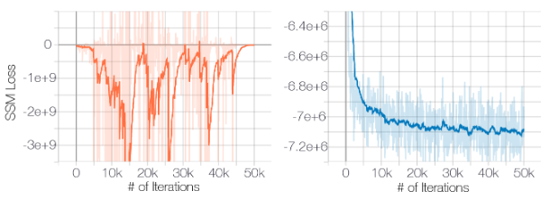
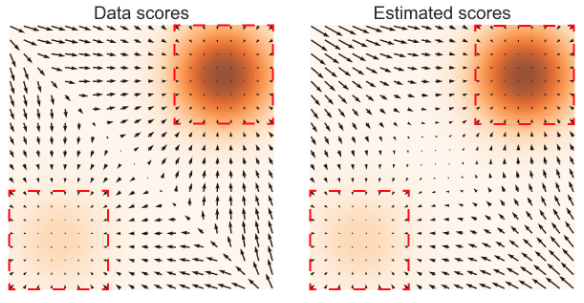
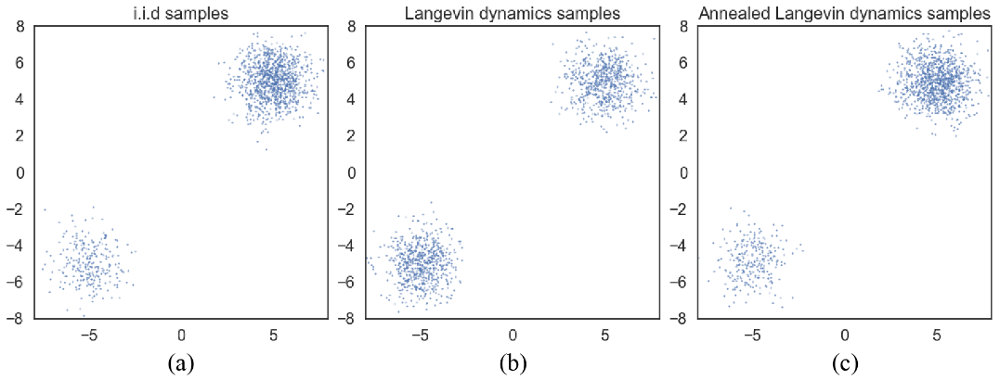

扩散模型阅读笔记(2)
论文基本信息
论文名称：Generative Modeling by Estimating Gradients of the Data Distribution
出版期刊：NeurIPS 2019
学校机构：Stanford University
论文翻译
标题
基于数据分布梯度估计的生成模型
摘要
我们提出了一种新型生成模型，该模型通过朗之万动力学（Langevin dynamics）进行采样，所用梯度通过对数据分布进行分数匹配（score matching）来估计。由于当数据位于低维流形上时，梯度可能难以定义且难以准确估计，我们采用不同强度的高斯噪声对数据进行扰动，并联合估计对应各噪声层级的分数（score），即所有噪声水平下扰动后数据分布的梯度向量场。在采样阶段，我们提出了一种退火朗之万动力学（annealed Langevin dynamics）：随着采样过程逐渐逼近真实数据流形，我们逐步使用对应更低噪声水平的梯度进行迭代更新。代码实现Github。
引言
生成模型在机器学习中具有广泛的应用。举例而言，它们已被用于生成高保真图像、合成逼真的语音与音乐片段、提升半监督学习的性能、检测对抗样本及其他异常数据、模仿学习，以及在强化学习中探索具有潜力的状态空间。近年来的进展主要由两类方法推动：基于似然的方法（likelihood-based methods）与生成对抗网络（GAN）。前者以对数似然（或合适的代理目标）作为训练目标，而后者则通过对抗训练来最小化模型分布与数据分布之间的 f 散度（f-divergences）或积分概率度量（integral probability metrics）。
尽管基于似然的模型与生成对抗网络（GAN）已取得显著成功，但它们各自存在一些固有局限。例如，基于似然的模型要么必须采用特定架构以构建归一化的概率模型（如自回归模型、流模型），要么需借助代理损失函数进行训练（如变分自编码器中使用的证据下界 、基于能量模型中的对比散度）。GAN 在一定程度上规避了基于似然模型的部分局限，但其对抗训练过程往往导致训练不稳定。此外，GAN 的目标函数并不适合用于不同 GAN 模型之间的评估与比较。尽管生成建模领域还存在其他目标函数，例如噪声对比估计（noise contrastive estimation）与最小概率流（minimum probability flow），但这些方法通常仅适用于低维数据，在高维场景下表现欠佳。
本文探索了一种基于估计与采样数据对数密度（logarithmic data density）的（Stein）分数的新型生成建模原理。该分数定义为输入数据点处对数密度函数的梯度，构成一个指向对数数据密度增长最快方向的向量场。我们采用基于分数匹配（score matching）训练的神经网络，从数据中学习这一向量场，并进一步利用朗之万动力学（Langevin dynamics）生成样本：其基本原理是将随机初始样本沿着（估计得到的）分数向量场逐步移向高密度区域。然而，该方法面临两大主要挑战：首先，若数据分布支撑于低维流形上——这在许多真实世界数据集中是常见假设——则在环境空间（ambient space）中分数将无法良好定义，导致分数匹配无法提供一致的分数估计器。其次，在低数据密度区域（例如远离流形的区域）训练数据稀缺，这不仅制约了分数估计的准确性，也延缓了朗之万动力学采样的混合（mixing）过程。由于朗之万动力学通常在数据分布的低密度区域进行初始化，这些区域中不准确的分数估计将对采样过程产生负面影响。此外，为实现在分布不同模态（modes）之间的转移，采样过程往往需要穿越低密度区域，这也使得混合过程变得困难。
为应对上述两大挑战，我们提出对数据施加不同强度的随机高斯噪声进行扰动。添加随机噪声可确保所得分布不会坍缩至低维流形。较大的噪声强度将在原始（未扰动）数据分布的低密度区域产生样本，从而改善分数估计效果。关键在于，我们训练一个以噪声强度为条件的单一分数网络（score network），并联合估计所有噪声层级下的分数。进而，我们提出一种退火版本的朗之万动力学：采样初始阶段使用对应最高噪声强度的分数，随后逐步降低噪声强度，直至其小到与原始数据分布难以区分为止。我们的采样策略受模拟退火（simulated annealing）启发，后者通过启发式方法有效改善了多模态景观下的优化性能。
我们的方法具备若干理想特性。首先，该目标函数对几乎所有分数网络的参数化形式均易于处理，无需特殊约束或架构设计，且可在训练过程中避免对抗训练、MCMC 采样或其他近似方法。此外，该目标函数还可用于对同一数据集上的不同模型进行定量比较。我们在 MNIST、CelebA 和 CIFAR-10 数据集上通过实验验证了该方法的有效性。结果表明，所生成的样本质量可与现代基于似然的模型及生成对抗网络（GAN）相媲美。在 CIFAR-10 数据集上，我们的模型在无条件生成模型中取得了 8.87 的全新最优 Inception Score，并获得了具有竞争力的 25.32 FID 分数。通过图像修复（inpainting）实验，我们进一步证明该模型能够学习到数据的有意义表征。
基于分数的生成模型
假设我们的数据集由来自未知数据分布 $ p_{\text{data}}(\mathbf{x}) $ 的独立同分布样本 $\{ \mathbf{x}_i \in \mathbb{R}^D \}_{i=1}^N$ 构成。我们定义概率密度 $ p(\mathbf{x}) $ 的分数（score）为 $ \nabla_{\mathbf{x}} \log p(\mathbf{x}) $。分数网络 $ s_\theta : \mathbb{R}^D \to \mathbb{R}^D $ 是一个由参数 $ \theta $ 参数化的神经网络，该网络将被训练以近似 $ p_{\text{data}}(\mathbf{x}) $ 的分数。生成建模的目标是利用数据集学习一个模型，从而从 $ p_{\text{data}}(\mathbf{x}) $ 中生成新的样本。基于分数的生成建模框架包含两个核心组成部分：分数匹配 与 朗之万动力学。
分数估计的分数匹配
分数匹配（score matching）最初设计用于基于独立同分布样本学习非归一化统计模型。我们将其重新用于分数估计。通过分数匹配，我们可直接训练分数网络 $\mathbf{s}_\theta(\mathbf{x})$ 以估计 $\nabla_{\mathbf{x}} \log p_{\text{data}}(\mathbf{x})$，无需预先训练模型来估计 $p_{\text{data}}(\mathbf{x})$。与分数匹配的典型用法不同，我们选择不使用基于能量模型的梯度，以避免因高阶导数带来的额外计算开销。该目标函数最小化 $\frac{1}{2} \mathbb{E}_{p_{\text{data}}(\mathbf{x})} \left[ \|\mathbf{s}_\theta(\mathbf{x}) - \nabla_{\mathbf{x}} \log p_{\text{data}}(\mathbf{x})\|_2^2 \right]$，在常数项内等价于以下形式：
$$ \mathbb{E}_{p_{\text{data}}(\mathbf{x})} \left[ \text{tr}(\nabla_{\mathbf{x}} \mathbf{s}_\theta(\mathbf{x})) + \frac{1}{2} \|\mathbf{s}_\theta(\mathbf{x})\|_2^2 \right], \tag{1} $$其中 $\nabla_{\mathbf{x}} \mathbf{s}_\theta(\mathbf{x})$ 表示 $\mathbf{s}_\theta(\mathbf{x})$ 的雅可比矩阵。在一定正则性条件下，式 (1) 的极小值点（记为 $\mathbf{s}_\theta^*(\mathbf{x})$）几乎必然满足 $\mathbf{s}_\theta^*(\mathbf{x}) = \nabla_{\mathbf{x}} \log p_{\text{data}}(\mathbf{x})$。实践中，式 (1) 中关于 $p_{\text{data}}(\mathbf{x})$ 的期望可通过数据样本快速估计。然而，由于 $\text{tr}(\nabla_{\mathbf{x}} \mathbf{s}_\theta(\mathbf{x}))$ 的计算限制，分数匹配难以扩展至深度网络和高维数据。下文将讨论两种适用于大规模分数匹配的流行方法。
去噪分数匹配（Denoising score matching）是分数匹配的一种变体，其核心优势在于完全规避了雅可比矩阵迹（$\text{tr}(\nabla_{\mathbf{x}} \mathbf{s}_\theta(\mathbf{x}))$）的计算。该方法首先通过预设噪声分布 $q_\sigma(\tilde{\mathbf{x}} \mid \mathbf{x})$ 对数据点 $\mathbf{x}$ 施加扰动，随后采用分数匹配技术估计扰动后数据分布 $q_\sigma(\tilde{\mathbf{x}}) \triangleq \int q_\sigma(\tilde{\mathbf{x}} \mid \mathbf{x}) p_{\text{data}}(\mathbf{x}) \mathrm{d}\mathbf{x}$ 的分数。其目标函数经证明等价于：
最小化式 (2) 的最优分数网络（记为 $\mathbf{s}_\theta^*(\mathbf{x})$）几乎必然满足 $\mathbf{s}_\theta^*(\mathbf{x}) = \nabla_{\mathbf{x}} \log q_\sigma(\mathbf{x})$。然而需注意：仅当噪声强度足够小（使得 $q_\sigma(\mathbf{x}) \approx p_{\text{data}}(\mathbf{x})$）时，才有 $\mathbf{s}_\theta^*(\mathbf{x}) \approx \nabla_{\mathbf{x}} \log p_{\text{data}}(\mathbf{x})$ 成立。
切片分数匹配（Sliced score matching）通过随机投影近似分数匹配中的雅可比矩阵迹 $\text{tr}(\nabla_{\mathbf{x}} \mathbf{s}_\theta(\mathbf{x}))$。其目标函数为：
其中 $p_{\mathbf{v}}$ 为简单随机向量分布（例如多变量标准正态分布）。$\mathbf{v}^\top \nabla_{\mathbf{x}} \mathbf{s}_\theta(\mathbf{x}) \mathbf{v}$ 可通过前向模式自动微分（forward mode auto-differentiation）高效计算。与去噪分数匹配不同：
- 切片分数匹配直接估计原始未扰动数据分布的分数
- 但因需前向模式自动微分，其计算量约为去噪分数匹配的四倍
关键术语说明
英文术语 中文译法 技术依据 Sliced score matching 切片分数匹配 “sliced” 源自随机投影的"切片"特性（保留数学本质） forward mode auto-differentiation 前向模式自动微分 计算机科学标准译法（对比"反向模式"） unperturbed data distribution 未扰动数据分布 与前文"perturbed data"（扰动后数据）严格对应 multivariate standard normal 多变量标准正态分布 概率论规范表述（避免"多元高斯"口语化）
基于朗之万动力学的采样
朗之万动力学（Langevin dynamics）仅需利用分数函数 $\nabla_{\mathbf{x}} \log p(\mathbf{x})$ 即可从概率密度 $p(\mathbf{x})$ 中生成样本。给定固定步长 $\epsilon > 0$ 和初始值 $\tilde{\mathbf{x}}_0 \sim \pi(\mathbf{x})$（其中 $\pi$ 为先验分布），朗之万方法通过以下递归式迭代计算：
$$ \tilde{\mathbf{x}}_t = \tilde{\mathbf{x}}_{t-1} + \frac{\epsilon}{2} \nabla_{\mathbf{x}} \log p(\tilde{\mathbf{x}}_{t-1}) + \sqrt{\epsilon} \, \mathbf{z}_t, \tag{4} $$其中 $\mathbf{z}_t \sim \mathcal{N}(0, I)$。当 $\epsilon \to 0$ 且 $T \to \infty$ 时，在满足一定正则性条件下，$\tilde{\mathbf{x}}_T$ 的分布将收敛至 $p(\mathbf{x})$，此时 $\tilde{\mathbf{x}}_T$ 即为 $p(\mathbf{x})$ 的精确样本。当 $\epsilon > 0$ 且 $T < \infty$ 时，需通过 Metropolis-Hastings 更新校正 式 (4) 的误差，但在实际应用中（当 $\epsilon$ 足够小且 $T$ 足够大时），该误差通常可忽略。
需注意：从式 (4) 采样仅需分数函数 $\nabla_{\mathbf{x}} \log p(\mathbf{x})$。因此，为从 $p_{\text{data}}(\mathbf{x})$ 生成样本，我们可先训练分数网络使 $\mathbf{s}_\theta(\mathbf{x}) \approx \nabla_{\mathbf{x}} \log p_{\text{data}}(\mathbf{x})$，再通过 $\mathbf{s}_\theta(\mathbf{x})$ 近似实现朗之万动力学采样。这正是基于分数的生成建模框架的核心思想。
基于分数的生成建模所面临的挑战
本节将对基于分数的生成建模思想进行更深入的分析。我们认为，存在两大主要障碍，使得该方法无法被直接（朴素地）应用。
流形假设
流形假设指出，现实世界的数据往往集中分布在高维空间（即环境空间）中嵌入的低维流形上。该假设已在诸多数据集中得到经验验证，并成为流形学习的基础理论。在流形假设下，基于分数的生成模型将面临两大关键挑战：
- 分数的定义问题：由于分数 $\nabla_{\mathbf{x}} \log p_{\text{data}}(\mathbf{x})$ 是在环境空间中计算的梯度，当数据点 $\mathbf{x}$ 被限制在低维流形上时，该梯度无法良好定义。
- 分数估计的不一致性：分数匹配目标函数（式(1)）仅在数据分布的支撑集为整个空间时提供一致的分数估计器（参见文献 [24] 中的定理 2），而当数据分布支撑于低维流形时，该估计器将变得不一致。
流形假设对分数估计的负面影响可通过图 1 清晰观察：我们在 CIFAR-10 数据集上训练 ResNet（附录 B.1 详述）以估计数据分数，采用切片分数匹配目标函数（式(3)）实现快速训练与精确估计。如图 1（左）所示，当直接在原始 CIFAR-10 图像上训练时，切片分数匹配损失先下降后出现剧烈波动。相比之下，若对数据施加微小高斯噪声（使扰动后数据分布的支撑集覆盖整个 $\mathbb{R}^D$），损失曲线将稳定收敛（右图）。需注意，我们施加的高斯噪声 $\mathcal{N}(0, 0.0001)$ 对像素值范围在 $[0,1]$ 的图像而言极其微弱，人眼几乎无法辨识。
图 1 说明
- 左图：无噪声添加时，切片分数匹配（SSM）损失随迭代次数的变化
- 右图：添加 $\mathcal{N}(0, 0.0001)$ 高斯噪声后，相同条件下的损失曲线
低数据密度区域
数据在低密度区域的稀缺性，将同时导致分数匹配与基于朗之万动力学的MCMC采样面临困难。
分数匹配中的分数估计不准确性
在数据密度较低的区域，由于样本数量不足，分数匹配可能无法准确估计分数函数。如第 2.1 节所述，分数匹配的目标是最小化分数估计值的期望平方误差，即 $\frac{1}{2} \mathbb{E}_{p_{\text{data}}} \left[ \|\mathbf{s}_\theta(\mathbf{x}) - \nabla_{\mathbf{x}} \log p_{\text{data}}(\mathbf{x})\|_2^2 \right]$。在实际应用中，该期望通常通过独立同分布样本 $\{\mathbf{x}_i\}_{i=1}^N \stackrel{\text{i.i.d.}}{\sim} p_{\text{data}}(\mathbf{x})$ 进行估计。考虑任意区域 $\mathcal{R} \subset \mathbb{R}^D$ 满足 $p_{\text{data}}(\mathcal{R}) \approx 0$，在大多数情况下 $\{\mathbf{x}_i\}_{i=1}^N \cap \mathcal{R} = \varnothing$，因此分数匹配无法获得足够样本以准确估计 $\mathcal{R}$ 内 $\mathbf{x}$ 处的 $\nabla_{\mathbf{x}} \log p_{\text{data}}(\mathbf{x})$。
为验证此负面影响，我们在图 2 中展示了一个简化实验（附录 B.1 详述）：使用切片分数匹配估计高斯混合分布 $p_{\text{data}} = \frac{1}{5} \mathcal{N}((-5,-5), I) + \frac{4}{5} \mathcal{N}((5,5), I)$ 的分数。如图所示，分数估计仅在模态（modes）附近的高密度区域内可靠，而在低密度区域存在显著偏差。
图 2 说明
- 左图：真实分数 $\nabla_{\mathbf{x}} \log p_{\text{data}}(\mathbf{x})$（橙色色阶编码：颜色越深表示密度越高）
- 右图：估计分数 $\mathbf{s}_\theta(\mathbf{x})$
- 红色矩形框：标注 $\nabla_{\mathbf{x}} \log p_{\text{data}}(\mathbf{x}) \approx \mathbf{s}_\theta(\mathbf{x})$ 的区域
Langevin 动力学的混合缓慢问题
当数据分布的两个模态被低密度区域分隔时，Langevin 动力学将无法在合理时间内准确恢复这两个模态的相对权重，因此可能无法收敛至真实分布。我们的分析主要受文献 [63] 启发，该文献在分数匹配的密度估计背景下分析了相同现象。
考虑高斯混合分布 $p_{\text{data}}(\mathbf{x}) = \pi p_1(\mathbf{x}) + (1-\pi)p_2(\mathbf{x})$，其中 $p_1(\mathbf{x})$ 和 $p_2(\mathbf{x})$ 是支撑集不相交的归一化分布，且 $\pi \in (0,1)$。在 $p_1(\mathbf{x})$ 的支撑集内，$\nabla_{\mathbf{x}} \log p_{\text{data}}(\mathbf{x}) = \nabla_{\mathbf{x}} (\log \pi + \log p_1(\mathbf{x})) = \nabla_{\mathbf{x}} \log p_1(\mathbf{x})$；在 $p_2(\mathbf{x})$ 的支撑集内，$\nabla_{\mathbf{x}} \log p_{\text{data}}(\mathbf{x}) = \nabla_{\mathbf{x}} (\log(1-\pi) + \log p_2(\mathbf{x})) = \nabla_{\mathbf{x}} \log p_2(\mathbf{x})$。在两种情况下，分数 $\nabla_{\mathbf{x}} \log p_{\text{data}}(\mathbf{x})$ 均与 $\pi$ 无关。由于 Langevin 动力学使用 $\nabla_{\mathbf{x}} \log p_{\text{data}}(\mathbf{x})$ 从 $p_{\text{data}}(\mathbf{x})$ 采样，所得样本将不依赖于 $\pi$。在实际应用中，当不同模态具有近似不相交的支撑集（可能共享相同支撑但被小密度区域连接）时，该分析结论依然成立。此时 Langevin 动力学理论上可生成正确样本，但可能需要极小步长和极大步数才能完成混合。
为验证此分析，我们在 3.2.1 节使用的相同高斯混合分布上测试 Langevin 动力学采样，并将结果展示在图 3 中。采样时使用真实分数作为输入。对比图 3(b) 与 (a) 可以明显看出，Langevin 动力学在两个模态间产生的相对密度存在偏差，这与我们的理论分析一致。
图 3 说明
- (a) 精确采样结果
- (b) 使用真实分数的 Langevin 动力学采样结果
- (c) 使用退火 Langevin 动力学（annealed Langevin dynamics）的真实分数采样结果
- 关键结论：Langevin 动力学对模态间相对权重的估计存在偏差，而退火 Langevin 动力学能准确恢复相对权重
噪声条件分数网络：学习与推理
我们观察到，通过随机高斯噪声扰动数据可使数据分布更适配基于分数的生成建模。首先，由于高斯噪声分布的支撑集覆盖整个空间，扰动后的数据将不再受限于低维流形，从而规避流形假设带来的困难并使分数估计明确定义。其次，较大的高斯噪声能填充原始未扰动数据分布中的低密度区域，使分数匹配获得更充分的训练信号以提升分数估计质量。更重要的是，通过采用多级噪声，我们可获得一系列收敛至真实数据分布的噪声扰动分布序列。我们可借鉴模拟退火与退火重要性采样的思想，利用这些中间分布提升多模态分布下 Langevin 动力学的混合效率。
基于此洞见，我们提出通过以下两步改进基于分数的生成建模：
- 使用多级噪声扰动数据；
- 通过训练单一噪声条件分数网络，联合估计所有噪声层级对应的分数。
训练完成后，在使用 Langevin 动力学生成样本时，我们初始采用大噪声层级对应的分数，再逐步降低噪声层级。这有助于将大噪声层级的优化优势平滑迁移至低噪声层级（此时扰动数据与原始数据几乎无法区分）。下文将详细阐述本方法的技术细节，包括分数网络架构、训练目标函数及 Langevin 动力学的退火调度策略。
噪声条件分数网络
设 $\{\sigma_i\}_{i=1}^L$ 为满足 $\frac{\sigma_1}{\sigma_2} = \dots = \frac{\sigma_{L-1}}{\sigma_L} > 1$ 的正几何序列。定义扰动数据分布 $q_{\sigma}(\mathbf{x}) \triangleq \int p_{\text{data}}(\mathbf{t}) \mathcal{N}(\mathbf{x} \mid \mathbf{t}, \sigma^2 I) \mathrm{d}\mathbf{t}$。我们选择噪声层级 $\{\sigma_i\}_{i=1}^L$，使得 $\sigma_1$ 足够大以缓解第 3 节讨论的困难，而 $\sigma_L$ 足够小以最小化对数据的影响。我们的目标是训练一个噪声条件分数网络，联合估计所有扰动数据分布的分数，即对任意 $\sigma \in \{\sigma_i\}_{i=1}^L$，满足 $\mathbf{s}_\theta(\mathbf{x}, \sigma) \approx \nabla_{\mathbf{x}} \log q_\sigma(\mathbf{x})$。需注意，当 $\mathbf{x} \in \mathbb{R}^D$ 时，$\mathbf{s}_\theta(\mathbf{x}, \sigma) \in \mathbb{R}^D$。我们将 $\mathbf{s}_\theta(\mathbf{x}, \sigma)$ 称为噪声条件分数网络（Noise Conditional Score Network, NCSN）。
与基于似然的生成模型和 GANs 类似，模型架构设计对生成高质量样本至关重要。在本工作中，我们主要关注适用于图像生成的架构设计，其他领域的架构设计将留待后续研究。由于噪声条件分数网络 $\mathbf{s}_\theta(\mathbf{x}, \sigma)$ 的输出形状与输入图像 $\mathbf{x}$ 相同，我们借鉴语义分割领域成功模型架构的设计思路（例如语义分割任务）。在实验中，我们的模型 $\mathbf{s}_\theta(\mathbf{x}, \sigma)$ 融合了 U-Net 的架构设计与空洞卷积/扩张卷积（二者在语义分割中已被证明非常成功）。此外，我们采用实例归一化（instance normalization），并基于其在部分图像生成任务中的卓越表现，使用条件实例归一化的改进版本实现对噪声层级 $\sigma_i$ 的条件化。关于模型架构的更多细节可详见附录 A。
通过分数匹配学习噪声条件分数网络
切片分数匹配与去噪分数匹配均可用于训练噪声条件分数网络（NCSN）。我们采用去噪分数匹配，因其在训练速度上略占优势，且更自然地契合噪声扰动数据分布的分数估计任务。需强调的是，经验切片分数匹配同样适用于 NCSN 训练。
我们选择噪声分布为 $q_\sigma(\tilde{\mathbf{x}} \mid \mathbf{x}) = \mathcal{N}(\tilde{\mathbf{x}} \mid \mathbf{x}, \sigma^2 I)$，因此 $\nabla_{\tilde{\mathbf{x}}} \log q_\sigma(\tilde{\mathbf{x}} \mid \mathbf{x}) = -(\tilde{\mathbf{x}} - \mathbf{x}) / \sigma^2$。对于给定噪声强度 $\sigma$，去噪分数匹配的目标函数（式(2)）为：
$$ \ell(\theta; \sigma) \triangleq \frac{1}{2} \mathbb{E}_{p_{\text{data}}(\mathbf{x})} \mathbb{E}_{\tilde{\mathbf{x}} \sim \mathcal{N}(\mathbf{x}, \sigma^2 I)} \left[ \left\| \mathbf{s}_\theta(\tilde{\mathbf{x}}, \sigma) + \frac{\tilde{\mathbf{x}} - \mathbf{x}}{\sigma^2} \right\|_2^2 \right]. \tag{5} $$随后，我们将式(5)对所有 $\sigma \in \{\sigma_i\}_{i=1}^L$ 求和，得到统一目标函数：
$$ \mathcal{L}(\theta; \{\sigma_i\}_{i=1}^L) \triangleq \frac{1}{L} \sum_{i=1}^L \lambda(\sigma_i) \ell(\theta; \sigma_i), \tag{6} $$其中 $\lambda(\sigma_i) > 0$ 是依赖于 $\sigma_i$ 的系数函数。假设 $\mathbf{s}_\theta(\mathbf{x}, \sigma)$ 具有足够容量，则式(6)的极小值点 $\mathbf{s}_\theta^*(\mathbf{x}, \sigma)$ 满足 $\mathbf{s}_\theta^*(\mathbf{x}, \sigma_i) = \nabla_{\mathbf{x}} \log q_{\sigma_i}(\mathbf{x})$ 几乎必然成立（对所有 $i \in \{1,2,\cdots,L\}$），因为式(6)是 $L$ 个去噪分数匹配目标函数的锥形组合。
关于系数函数 $\lambda(\cdot)$ 的取值存在多种可能选择。理想情况下，我们希望所有 $\{\sigma_i\}_{i=1}^L$ 对应的 $\lambda(\sigma_i)\ell(\theta;\sigma_i)$ 具有大致同阶的量级。通过实验观察发现，当分数网络训练至最优时，$\|\mathbf{s}_\theta(\mathbf{x}, \sigma)\|_2 \propto 1/\sigma$。这一现象启发我们选择 $\lambda(\sigma) = \sigma^2$。在此选择下，$\lambda(\sigma)\ell(\theta;\sigma) = \sigma^2 \ell(\theta;\sigma) = \frac{1}{2}\mathbb{E}\left[\|\mathbf{s}_\theta(\tilde{\mathbf{x}}, \sigma) + \frac{\tilde{\mathbf{x}} - \mathbf{x}}{\sigma}\|_2^2\right]$。由于 $\frac{\tilde{\mathbf{x}} - \mathbf{x}}{\sigma} \sim \mathcal{N}(0, I)$ 且 $\|\mathbf{s}_\theta(\mathbf{x}, \sigma)\|_2 \propto 1$，可直接推导出 $\lambda(\sigma)\ell(\theta;\sigma)$ 的量级与 $\sigma$ 无关。
需特别强调：我们的目标函数（式(6)）具有以下核心优势：
- 训练过程无需对抗训练；
- 无需代理损失函数（例如对比散度等）；
- 训练过程中无需从分数网络进行采样（区别于对比散度等方法）；
- 不要求分数网络具有特殊架构即可保证可训练性。
此外，当 $\lambda(\cdot)$ 和 $\{\sigma_i\}_{i=1}^L$ 固定时，该目标函数可用于定量比较不同噪声条件分数网络（NCSN）的性能。
通过退火朗之万动力学进行 NCSN 推理
在训练完噪声条件分数网络 $\mathbf{s}_\theta(\mathbf{x}, \sigma)$ 后，我们提出一种采样方法——退火朗之万动力学（算法 1）——用于生成样本。该方法受模拟退火和退火重要性采样的启发。如算法 1 所示，我们首先从某个固定的先验分布（例如均匀噪声）初始化样本 $\tilde{\mathbf{x}}_0$。随后，我们以步长 $\alpha_1$ 运行朗之万动力学，从 $q_{\sigma_1}(\mathbf{x})$ 采样。接着，我们从上一次模拟的最终样本出发，以减小的步长 $\alpha_2$ 运行朗之万动力学，从 $q_{\sigma_2}(\mathbf{x})$ 采样。我们以这种方式继续迭代：将 $q_{\sigma_{i-1}}(\mathbf{x})$ 的朗之万动力学最终样本作为 $q_{\sigma_i}(\mathbf{x})$ 的初始样本，并逐步减小步长 $\alpha_i$（其中 $\alpha_i = \epsilon \cdot \sigma_i^2 / \sigma_L^2$）。最终，我们运行朗之万动力学从 $q_{\sigma_L}(\mathbf{x})$ 采样，当 $\sigma_L \approx 0$ 时，$q_{\sigma_L}(\mathbf{x})$ 与原始数据分布 $p_{\text{data}}(\mathbf{x})$ 高度接近。
由于所有扰动分布 $\{q_{\sigma_i}\}_{i=1}^L$ 均通过高斯噪声进行扰动，其支撑集覆盖整个空间且分数定义良好，从而规避了流形假设带来的困难。当 $\sigma_1$ 足够大时，$q_{\sigma_1}(\mathbf{x})$ 的低密度区域显著缩小，且不同模态之间的隔离程度降低。如前所述，这能提升分数估计的准确性并加速朗之万动力学的混合过程。因此，我们可以合理假设朗之万动力学能从 $q_{\sigma_1}(\mathbf{x})$ 生成高质量样本。这些样本很可能处于 $q_{\sigma_1}(\mathbf{x})$ 的高密度区域，这意味着它们也大概率处于 $q_{\sigma_2}(\mathbf{x})$ 的高密度区域——鉴于 $q_{\sigma_1}(\mathbf{x})$ 与 $q_{\sigma_2}(\mathbf{x})$ 仅存在细微差异。由于分数估计和朗之万动力学在高密度区域表现更优，$q_{\sigma_1}(\mathbf{x})$ 的样本可作为 $q_{\sigma_2}(\mathbf{x})$ 朗之万动力学的优质初始样本。同理，$q_{\sigma_{i-1}}(\mathbf{x})$ 为 $q_{\sigma_i}(\mathbf{x})$ 提供优质初始样本，最终我们能从 $q_{\sigma_L}(\mathbf{x})$ 获得高质量样本。
在算法1中，关于步长 $\alpha_i$ 的调整策略存在多种可能方案。我们的选择是 $\alpha_i \propto \sigma_i^2$，其动机在于固定朗之万动力学中的"信号-噪声比" $\frac{\alpha_i \mathbf{s}_\theta(\mathbf{x}, \sigma_i)}{2\sqrt{\alpha_i} \mathbf{z}}$ 的量级。需注意：$\mathbb{E}\left[\left\|\frac{\alpha_i \mathbf{s}_\theta(\mathbf{x}, \sigma_i)}{2\sqrt{\alpha_i} \mathbf{z}}\right\|_2^2\right] \approx \mathbb{E}\left[\frac{\alpha_i \|\mathbf{s}_\theta(\mathbf{x}, \sigma_i)\|_2^2}{4}\right] \propto \frac{1}{4} \mathbb{E}\left[\|\mathbf{s}_\theta(\mathbf{x}, \sigma_i)\|_2^2\right]$。如前所述，当分数网络训练接近最优时，$\|\mathbf{s}_\theta(\mathbf{x}, \sigma_i)\|_2 \propto 1/\sigma_i$，因此 $\left\|\frac{\alpha_i \mathbf{s}_\theta(\mathbf{x}, \sigma_i)}{2\sqrt{\alpha_i} \mathbf{z}}\right\|_2^2 \propto \frac{1}{4} \mathbb{E}\left[\|\mathbf{s}_\theta(\mathbf{x}, \sigma_i)\|_2^2\right] \propto \frac{1}{4}$，该量级与 $\sigma_i$ 无关。
为验证退火朗之万动力学的有效性，我们通过一个玩具实验进行演示：仅使用分数从两个分离良好的高斯混合分布中采样（实验设置同3.2节）。我们采用算法1进行采样，选择 $\{\sigma_i\}_{i=1}^L$ 为几何级数，其中 $L=10$，$\sigma_1=10$，$\sigma_{10}=0.1$。实验结果展示于图3。对比图3(b)与(c)可见，退火朗之万动力学能正确恢复两模态间的相对权重，而标准朗之万动力学则失败。